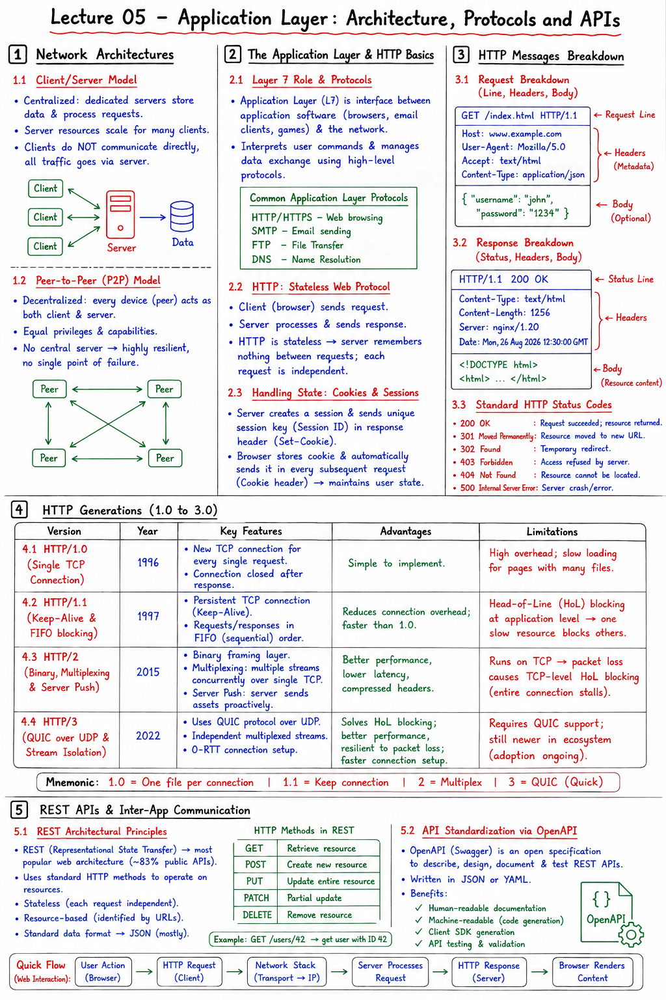

Short Notes & Visual Summary
Handwritten / quick summary notes for Lecture 05:

Click image to open high-resolution version in new tab
Network Architectures
1.1 Client/Server Model
The client/server architecture is a centralized model where powerful, dedicated servers store data and process incoming requests for multiple dependent clients (such as web browsers or mobile applications).
- Centralized control and data storage.
- Server resources scale to handle multiple clients.
- Clients do not communicate with each other directly; all traffic passes through the server.
1.2 Peer-to-Peer (P2P) Model
The peer-to-peer (P2P) architecture is a decentralized model where all connected devices ("peers") act as both clients and servers with equal privileges and capabilities. P2P architectures do not rely on central servers, making them highly resilient to single-point-of-failure issues.
The Application Layer & HTTP Basics
2.1 Layer 7 Role & Protocols
The Application Layer (Layer 7) is the direct interface between software programs (such as browsers, email clients, games) and the underlying network. It interprets user commands and manages data exchanges across systems using high-level protocols (HTTP, SMTP, FTP, DNS).
2.2 HTTP: Stateless Web Protocol
HTTP is a stateless request-response protocol. The client (browser) sends a request to the server, and the server processes it and sends back a response. Because HTTP is stateless, the server remembers nothing between requests, treating each message exchange completely independently.
2.3 Handling State: Cookies & Sessions
If HTTP is stateless, how do shopping carts stay full or logins stay active? Developers use Cookies and Session Tokens. The server sends a unique session key inside a response header, which the client browser stores and automatically appends to every subsequent request, identifying the user state.
HTTP Messages Breakdown
3.1 Request Breakdown (Line, Headers, Body)
HTTP requests consist of a Request Line, Headers, and an optional Body:
- Request Line: Contains the HTTP Method (e.g. GET, POST, PUT, DELETE), URL Resource path, and HTTP Version.
GET /index.html HTTP/1.1
- Headers: Metadata providing details about client capabilities (e.g.,
Host,User-Agent,Content-Type,Accept). - Body: Contains actual form data or JSON payloads (mostly for POST, PUT, and PATCH operations).
3.2 Response Breakdown (Status, Headers, Body)
HTTP responses mirror the request structure: Status Line, Headers, and a Body:
- Status Line: Contains HTTP Version, numeric Status Code, and Status Message.
HTTP/1.1 200 OK
- Headers: Response metadata (e.g.,
Content-Type,Content-Length,Server,Date). - Body: The actual resource content (HTML structure, image binary data, or API JSON response).
3.3 Standard HTTP Status Codes
- 200 OK: Request succeeded; resource returned.
- 301 Moved Permanently: Resource moved to a new URL.
- 302 Found: Temporary URL redirection.
- 403 Forbidden: Access refused by server credentials.
- 404 Not Found: Resource cannot be located.
- 500 Internal Server Error: Server crash/error.
HTTP Generations (1.0 to 3.0)
4.1 HTTP/1.0 (Single TCP Connection)
Introduced in 1996, HTTP/1.0 establishes a new TCP connection for every single file request (HTML, CSS, image), terminating it immediately after transfer. This creates massive overhead and slows rendering of complex multi-asset web pages.
4.2 HTTP/1.1 (Keep-Alive & FIFO blocking)
Released in 1997, HTTP/1.1 introduced persistent TCP connections (Keep-Alive) allowing multiple resource transfers on a single socket. However, resources must be sent sequentially in First-In-First-Out (FIFO) order. If a slow resource (like a large image) stalls, it blocks all subsequent elements—a problem known as Head-of-Line (HoL) Blocking at the application level.
4.3 HTTP/2 (Binary, Multiplexing & Server Push)
Launched in 2015, HTTP/2 replaced text-based messages with a Binary Framing Layer and introduced Multiplexing—transmitting multiple requests and responses concurrently over a single TCP connection. It also added Server Push, letting servers preemptively push assets (like CSS files) to clients. However, because it runs on TCP, a single lost packet stalls the entire connection (TCP-level Head-of-Line blocking).
4.4 HTTP/3 (QUIC over UDP & Stream Isolation)
Standardized in 2022, HTTP/3 replaces TCP with QUIC (a UDP-based transport protocol developed by Google). It handles multiplexed streams independently. If a packet is lost, only that specific stream is stalled while other streams continue unimpeded, fully solving both application-level and transport-level Head-of-Line blocking.
REST APIs & Inter-App Communication
5.1 REST Architectural Principles
API stands for Application Programming Interface. When applications need to talk to other applications, they use API rules. The most popular architecture on the public web is REST (Representational State Transfer), which is used by roughly 83% of public web services to transmit JSON data over standard HTTP methods (GET, POST, PUT, DELETE).
5.2 API Standardization via OpenAPI
OpenAPI (popularized by Swagger) is an open specification schema used to describe, design, document, and test RESTful APIs in a human-readable and machine-readable JSON/YAML format.
Original PDF Notes
Below is the original PDF document for reference: